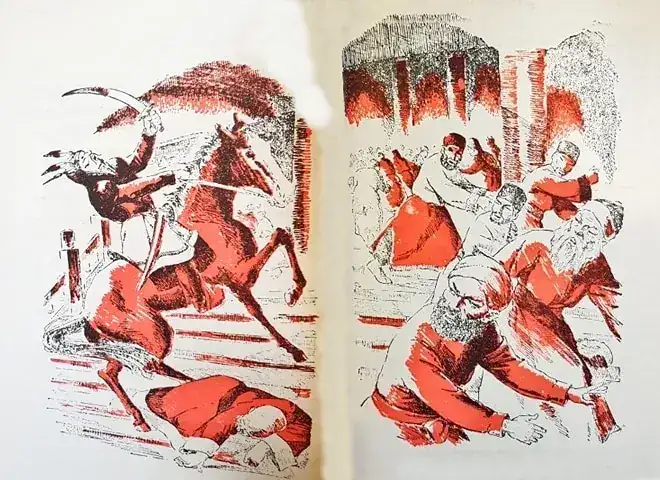

The account
Genghis Khan died in 1227, and the sources say he was buried in secret, without a marked grave, with the site concealed — in some versions by driving horses over it, in others by diverting a river. The burial place has never been identified.
Maps, diagrams and images


The searches
Expeditions have searched the Khentii mountains and the Onon valley, using remote sensing and archaeology, without success. In 2015 the Mongolian government suspended further searches and protected the area, citing respect for the tradition and the risk to archaeology.
The secrecy is documented; the grave is not, and the search is now restricted by policy rather than by difficulty.
Documented: the death, the secrecy and the traditions.
Documented: the searches and the suspension.
Not found: the burial place.
Not permitted: further searches at present.
The honest label: live debate.
Why it is in the archive
Because it is a lost tomb that is lost by design, and because the ethical question — whether to look — is now part of the record.
Open resources on this topic
- PapersOpen-access articles: DOAJ · PubMed Central · Internet Archive Scholar
- BooksPublic-domain and borrowable copies: Open Library · Project Gutenberg · Google Books · Internet Archive
Cite this page
Momin, S. (2026). Genghis Khan's Burial. The Larger World Archive. https://drsamonline.github.io/LARGE_GLOBE/genghis-khan-burial.htmlMomin, Sohil. “Genghis Khan's Burial.” The Larger World Archive, 2026, https://drsamonline.github.io/LARGE_GLOBE/genghis-khan-burial.html.Momin, Sohil. “Genghis Khan's Burial.” The Larger World Archive, 2026. https://drsamonline.github.io/LARGE_GLOBE/genghis-khan-burial.html.@misc{genghis2026genghis,
author = {Momin, Sohil},
title = {Genghis Khan's Burial},
year = {2026},
howpublished = {The Larger World Archive},
url = {https://drsamonline.github.io/LARGE_GLOBE/genghis-khan-burial.html},
note = {Last reviewed 20 November 2026}
}Last reviewed 20 November 2026 · Corrections policy · this page is not peer reviewed
Sources for this page
- Wikipedia, “Genghis Khan” — the khan and the burialen.wikipedia.org
- Wikipedia, “Khentii Province” — the search areaen.wikipedia.org
- Wikipedia, “Burkhan Khaldun” — the sacred mountainen.wikipedia.org
- Wikipedia, “Archaeology” — the discipline involveden.wikipedia.org